Rookie · Cases 01 and 02
Character: one portrait. Location: one empty room, lit like something just happened there.
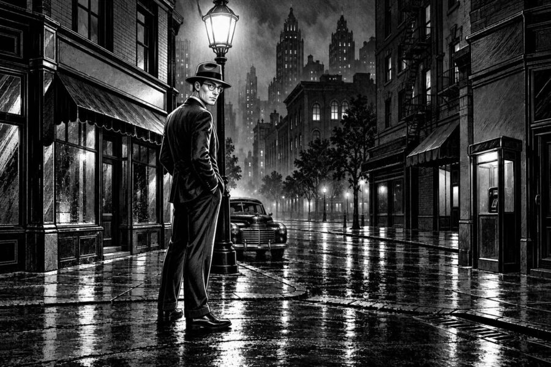
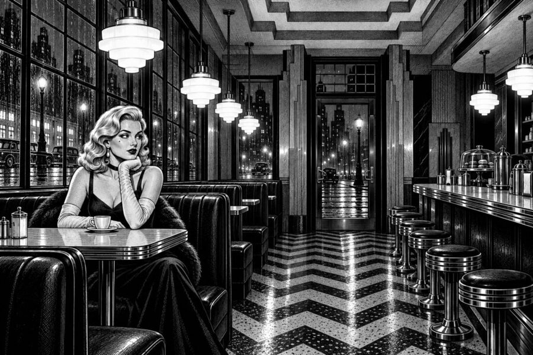
Eight skills that turn a vague request into a prompt that works. You practise each one on The Precinct, one numbered step at a time.
See the eight skills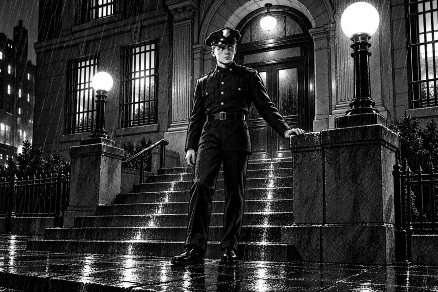
Study a picture and put words to what you see: the subject, the details, the world around it.
Era, medium, palette, camera and light get you close on the first try. A vague prompt returns a generic picture.
Use one description of a character, word for word, in every prompt.
One empty room, then two rooms that read as one building, then a whole street.
Ask for no extra people, no text and no other colours, or the AI fills the gaps with its own ideas.
Choose one colour palette, use it in every prompt and end the line with "no other colours".
Put the result next to what you asked for, spot what drifted and find the word that caused it.
Single edits show which word did the work. That is how prompt skill grows.
A free web page made by Glenn Malcolm for teachers. You look closely at a noir comic picture, describe it, and the site writes you a detailed prompt: the written instruction an AI image tool needs to draw it.
The site never draws. You paste the prompt into an image tool such as Gemini, make your picture, then come back to check it and put it in a comic panel.
The hands-on part takes about 35 to 40 minutes. Work through it top to bottom.
Type this address into any web browser:
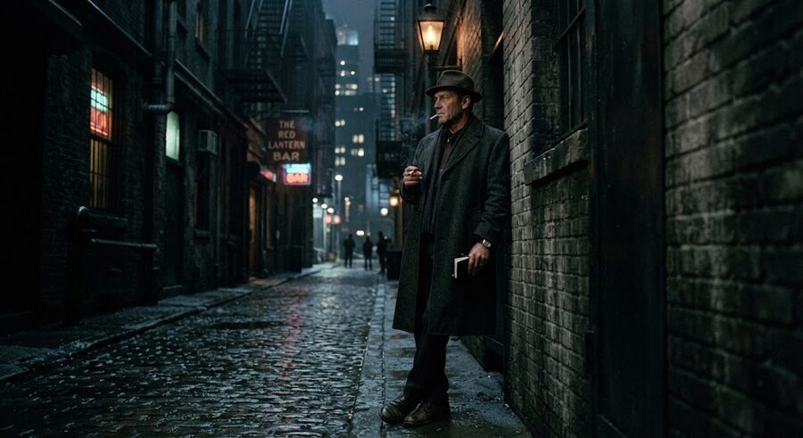
A colour photograph, not a comic, with a cigarette, a book and a bar sign nobody asked for.
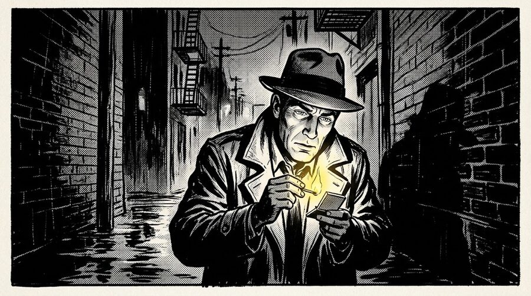
Era, medium and palette held. The flame still came out yellow: the first render is a draft.
Do every step in order. Yellow numbered circles show what to do. Boxes marked "New to AI?" explain the basics. Tick each circle as you finish it, and the guide remembers where you are.
Show the quick path: only the key steps, about 29 of 43. "Going faster?" challenges appear at the end of some parts. The other steps are still here if you switch back.
Three steps. You finish on the Look closely page.
Keep this guide in one window and the site in another, side by side, so you never lose your place.
Mac: hover over the green button at the top left of this window and choose to tile it to the left. Then pick the site’s window for the right.
Windows: click this window, press the Windows key and the left arrow, then pick the site’s window.
Chromebook: press Alt and [ for this window, then Alt and ] for the site’s window.
iPad: in Safari, tap the three dots at the top of the screen, then Split View.
Guide and site in one window, as two tabs? Drag the site’s tab out, so it becomes a window of its own.
An AI image tool is a chat box that draws. You type a description and it makes a picture. The Precinct does not draw anything itself. It helps you write the description, called a prompt, and then helps you check what came back.
Copy and paste: select the text, press Ctrl+C (Cmd+C on a Mac), click where it should go, then press Ctrl+V (Cmd+V). On a tablet, press and hold the text, then choose Copy. Press and hold again where it should go, then choose Paste.
Describe a picture before you ask an AI for anything. You finish with a written description.
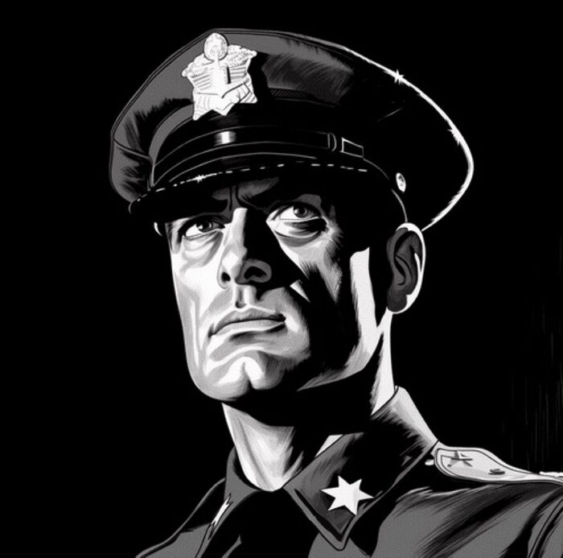
7Go round the picture in order: the person, then what they wear, then the light, then the colours. One short phrase for each is enough.
Switch Level to Medium ("The details") and answer about hair, clothing, camera angle and lighting. Those are the details that decide whether the AI draws your character or a stranger.
Pick a character and a palette, then put what you notice into at least 15 words of your own.
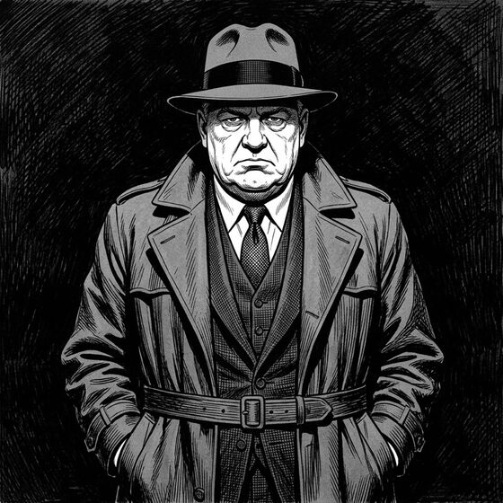
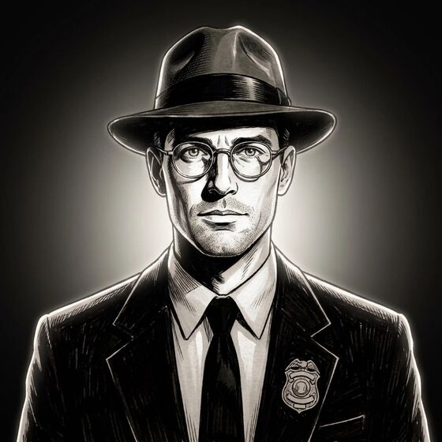
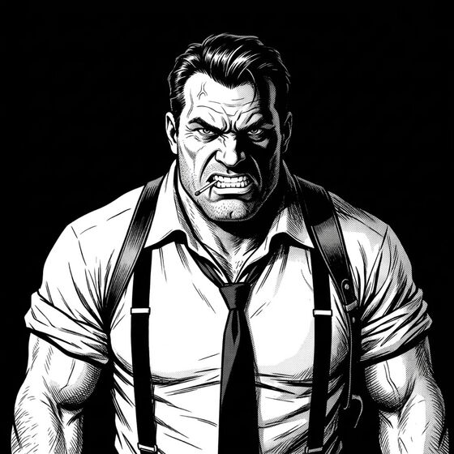
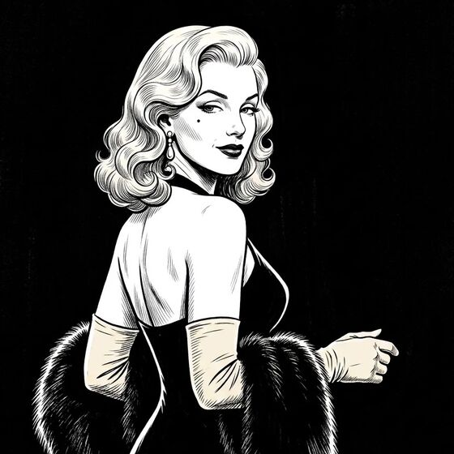
See three more characters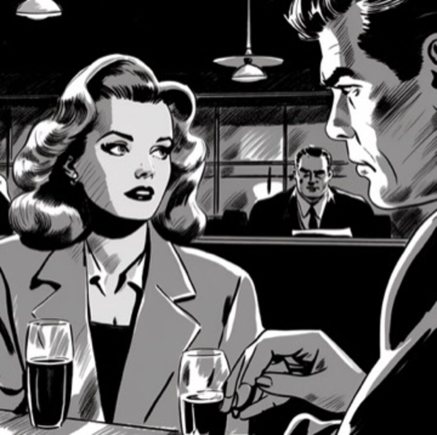
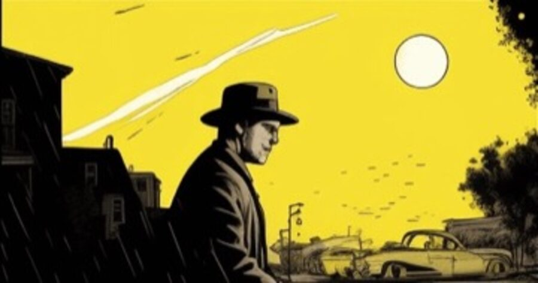
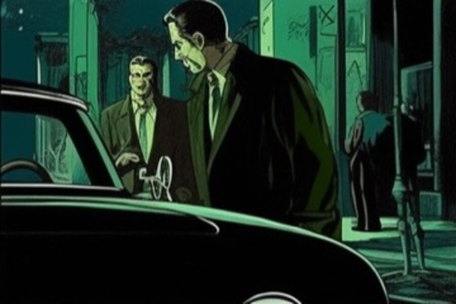
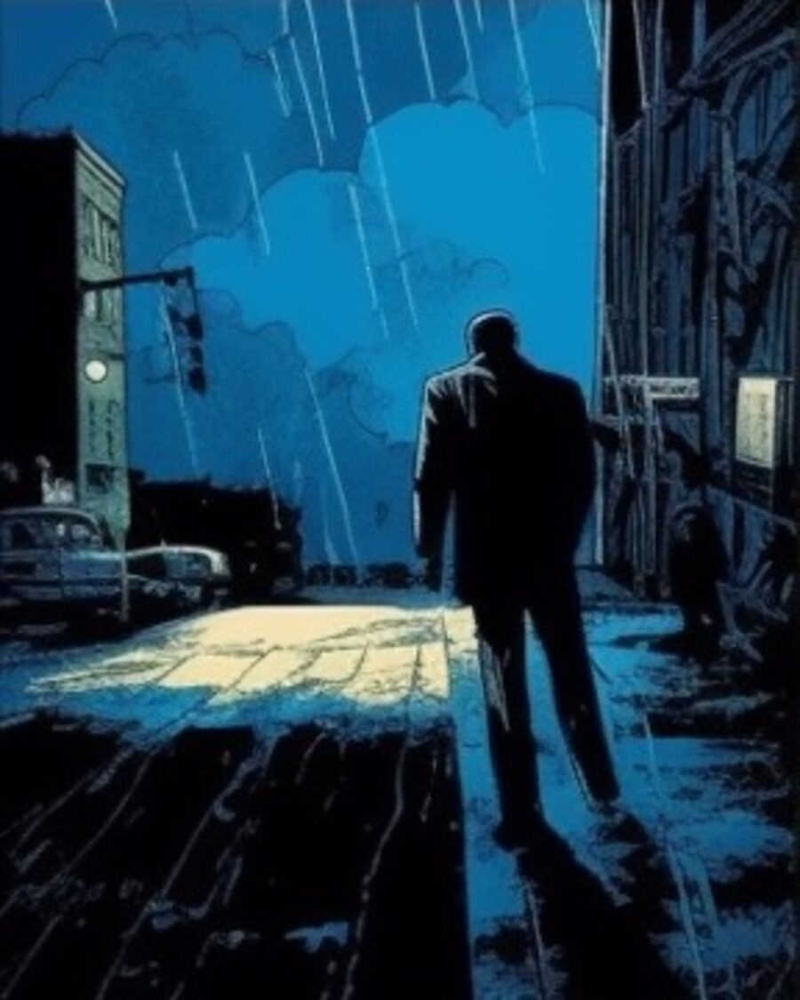
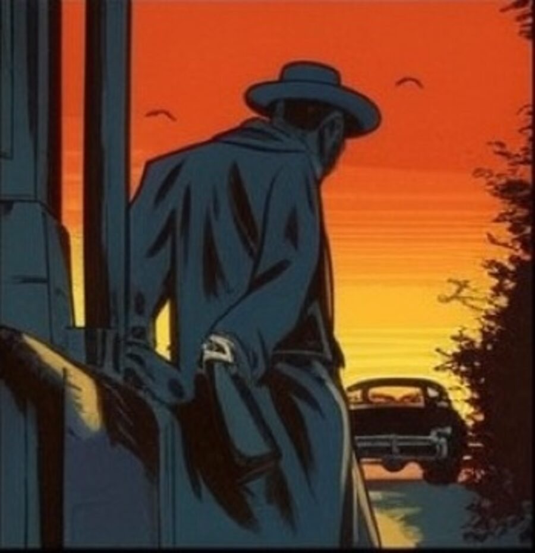
The desk reads your words before it writes anything. Fifteen of your own makes you do the looking first, which is the skill this whole session practises.
Go back and choose Choose a place instead of Not yet. Pick one of the ten places from the story and its look goes into your brief for you.
Tell the desk your tool and your idea. It writes your prompt.
It is the part of The Precinct that reads your description and idea and writes a full prompt for your tool. The code lets it use the AI account for the workshop.
This part happens in your image tool. Keep the first result, whatever comes back.
On a computer, right-click the picture and choose Save image or Copy image. On a tablet, press and hold the picture. In some tools there is a download button under the picture.
Put what came back next to what you asked for. Find one difference, change one thing, make it again.
If you change three things and the picture improves, you will not know which word did it. One change at a time is how prompt skill grows.
Using Canva? Its Dream Lab cannot describe pictures. Ask an AI chat that can look at images, such as Gemini or ChatGPT, for step 36 instead.
Put your picture and a character into a comic panel.
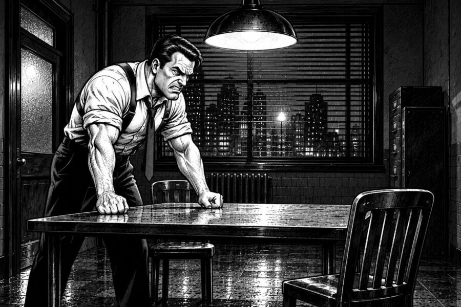
39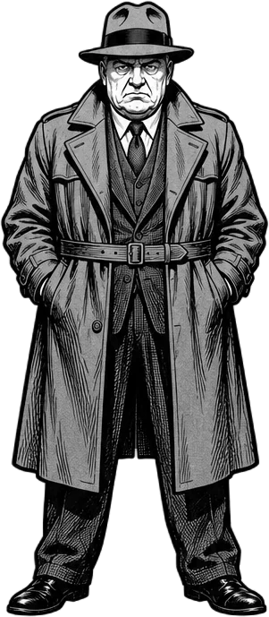
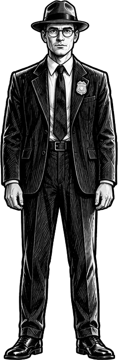
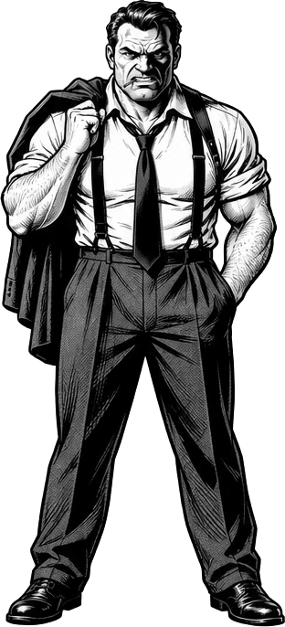
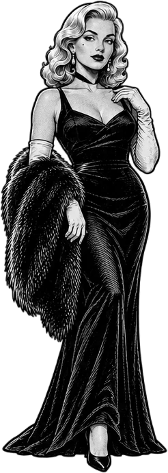
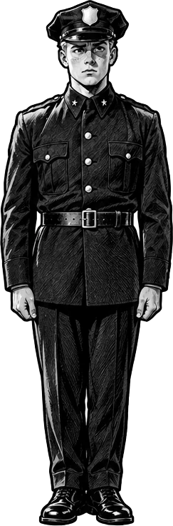
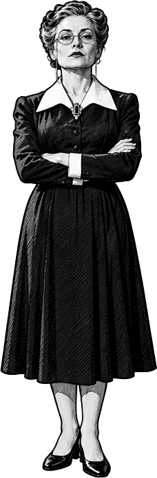
Character: one portrait. Location: one empty room, lit like something just happened there.
The same face in a new room. The look goes in word for word, every time, or the face walks off the job.
Three panels, one story, then the page. Plan the shots with an AI as your partner before anything gets drawn.
Ready for more? Press Change case at the top of your case file and pick the next case. The workshop code opens every level. Case 05, Review, is the check on its own, for any picture.
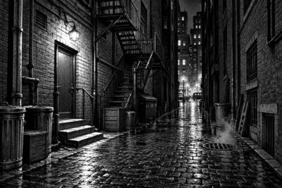
It's not just a comic. It's a case.THE PRECINCT